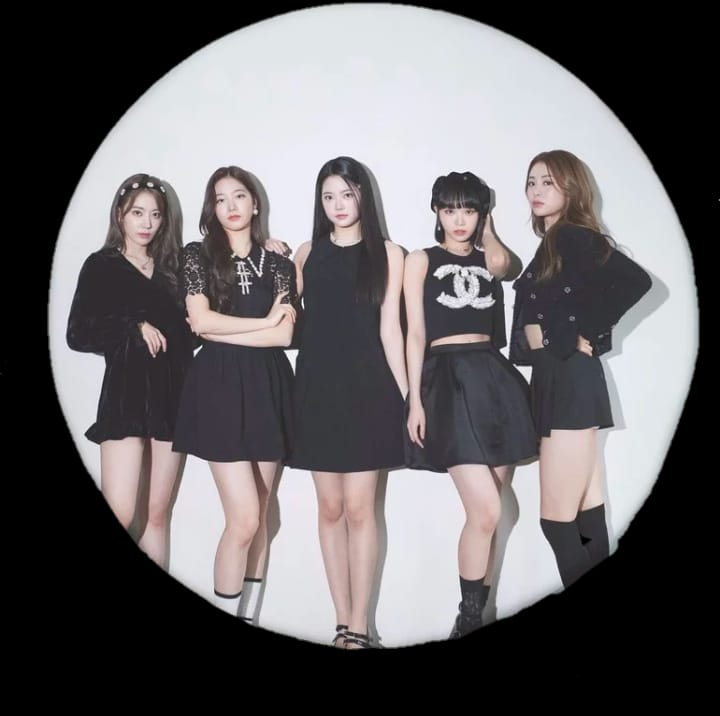

LE SSERAFIM (르세라핌) é um grupo feminino da HYBE em parceria com a Source Music. O grupo debutou com 6 membros: Sakura, Garam, Eunchae, Chaewon, Kazuha e Yunjin. LE SSERAFIM estreou oficialmente em 2 de maio de 2022 com seu 1º mini álbum “FEARLESS”. Pouco após o debute, a membro Garam saiu do grupo sob acusações de bullying na escola em que estudava. No entanto, meses mais tarde foi provada a inocência da idol. Atualmente o grupo segue atividade com 5 membros.
